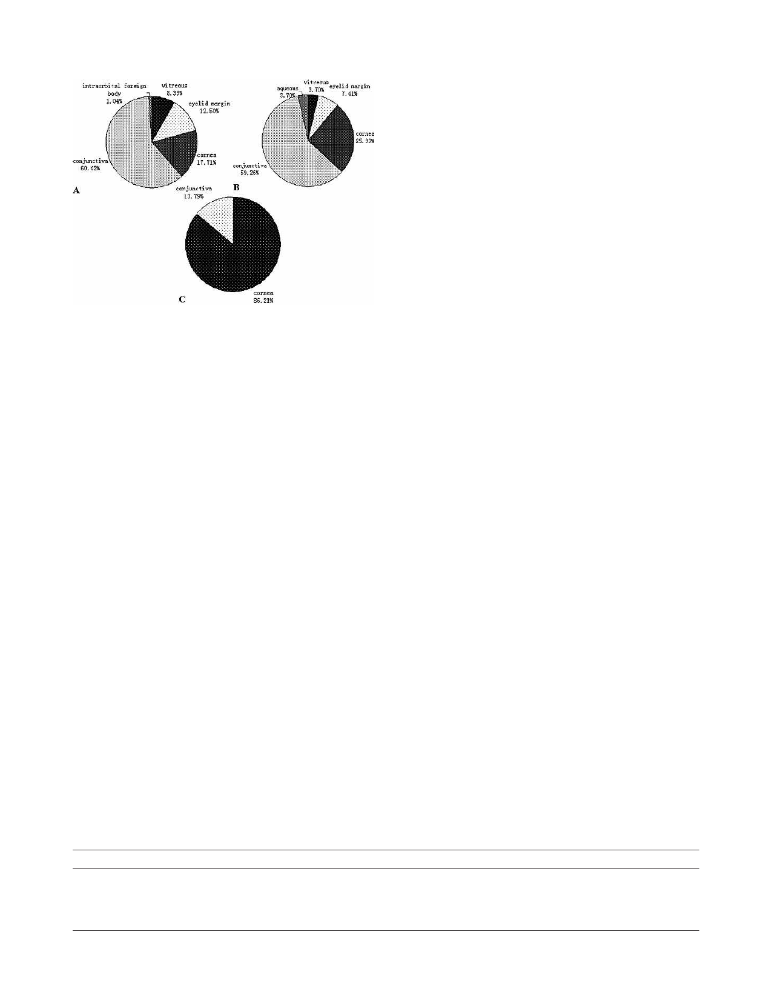

IOVS, August 2012, Vol. 53, No. 9
Biofilm-Forming Capacity of Human Flora Bacteria 5625
FIGURE 1. Isolation sites of the clinical isolates included in this study.
(A) Isolation sites of S. epidermidis strains. (B) Isolation sites of S.
aureus strains. (C) Isolation sites of P. aeruginosa strains.
METHODS
Bacterial Strains
Ninety-six clinical isolates of S. epidermidis, 27 S. aureus, and 29 P.
aeruginosa clinical strains were collected retrospectively over 30
months (2009–2011) from the Department of Ophthalmology in Tongren
Hospital (Beijing, CHN) and submitted to the Microbial Laboratory of
Beijing Institute of Ophthalmology (Beijing, CHN). The identification of
strains was made according to their biochemical properties as
determined using an automated system ATB Expression (bioMerieux
S.A, Marcy-l’E´toile, France). Bacterial cultures were archived in glycerol
stocks and were stored at À808C. Two reference strains of Staphylococ-
cus spp., the biofilm-forming strain, ATCC 35984, and the biofilm-
negative strain, ATCC 12228, were used. The biofilm-forming strain,
PAO1, was used as the reference strain of P. aeruginosa. The 152 isolates
analyzed in this study were collected from the cornea, conjunctiva, eyelid
margin, intraorbital foreign body, and vitreous and aqueous humors of
patients who suffered from corneal ulcers, conjunctivitis, blepharritis,
orbital cellulites, and/or endophthalmitis (Fig. 1).
Congo Red Agar (CRA) Method
For Staphylococcus spp., the CRA was composed of 37 g/L of brain–heart
infusion broth (Becton Dickinson, Franklin Lakes, NJ), 36 g/L of sucrose
(Sigma, St. Louis, MO), 15 g/L of agar (Becton Dickinson), and 0.8 g/L of
Congo red (Sigma). The morphology of the colonies and their phenotypic
changes were studied using CRA cultures as previously described.19
Briefly, plates with Congo red medium were incubated aerobically for 24
hours at 378C to obtain single bacterial colonies. CRA-positive strains
appeared as black colonies, while CRA-negative strains remained red.
Microtiter Plate Assay
Biofilm production was detected using microtiter assay as previously
described.20–22 Briefly, Staphylococcus spp. were inoculated in 10 mL
of tryptic soy broth (TSB; Becton Dickinson) with 0.25% glucose (Wako
Pure Chemical Industries, Osaka, Japan) and incubated overnight with
shaking at 378C, while P. aeruginosa clinical strains were grown in
lysogeny broth (LB). Next, the cultures were diluted 1:100, and 200 lL
of the diluted cultures, per well, were inoculated into 96-well
polystyrene microtiter plates (Costar 3599, Corning, Tissue Culture-
Treated; Corning Inc., Corning, NY). After 24 hours incubation at 378C
under aerobic conditions, the plates were washed twice with sterile
PBS (pH 7.2; Becton Dickinson), fixed in Bouin’s fixation (Becton
Dickinson) for 1 hour, and washed again with PBS. Subsequently, the
plates were stained with 200 lL of 1% crystal violet, per well, for 10
minutes. Excess crystal violet was removed by gently washing the plate
twice with distilled water. Finally, a volume of 250 lL of 95% ethanol
solution, per well, was added to the plate and the optical density was
measured at 570 nm. A well with sterile TSB or LB served as controls,
whereby their ODs were subtracted from that of the experimental
strains. The mean OD 570 nm value was determined using four
replicates, and was considered to be adherence positive at OD 570 nm
greater than or equal to 0.12 and adherence negative at OD 570 nm less
than 0.12.
Genetic Techniques
In order to detect genes related to biofilm formation, bacterial cultures
were lysed, DNA extracted, and gene specific primers were used to
PCR amplify DNA fragments as previously described.23 Genomic DNA
was extracted using a NucleoSpin1 Tissue extraction kit (Macherey-
Nagel, Du¨ren, Germany) according to the manufacturer’s recommen-
dations with slight modifications. The primer sequences and product
length for icaA of Staphylococcus spp. and pslA of P. aeruginosa are
presented in Table 1. The reaction volume was 50 lL containing PCR
buffer 5 lL (10 mM), the forward and reverse primers (1 lL each),
together with 1 lL of the extracted DNA, 1 lL of dNTP, 1 lL of Taq
DNA polymerase, and 40 lL of double distilled H2O (ddH2O). A
thermal step program was used, including the following parameters:
incubation at 948C for 10 minutes, followed by 30 cycles at 948C for 1
minute (denaturation), 558C for 30 seconds (annealing), and 728C for
10 minutes after conclusion of the 30 cycles. Amplification products
were analyzed using 2% agarose gel electrophoresis.
Scanning Electron Microscopy Analysis
Bacterial adherence was then investigated by SEM as previously
described.24 Biofilm-positive strains and biofilm-negative strains con-
firmed by all three methods listed above were selected to be cultured
on cover slips in vitro. Briefly, strains were inoculated into 10 mL of
TSB with 0.25% glucose and incubated overnight with shaking at 378C
in a water bath. Next, the solution was diluted 1:100 and inoculated
into 24-well polystyrene microtiter plates, then, a cover slip was placed
on the bottom of each well. After 1, 6, 24, and 72 hour incubations at
378C under aerobic conditions, the cover slips were removed from
wells with sterile forceps and gently rinsed by immersion in sterile PBS
for 1 minute. For SEM analysis, the cover slips were fixed in 2.5%
glutaraldehyde in 0.2 M sodium cacodylate buffer (pH 7.2), postfixed in
1% osmium tetroxide in 0.2 M sodium cacodylate buffer (pH 7.2), and
serially dehydrated in ethyl alcohol. After critical-point drying, they
were coated with gold using a sputter-coating system (sputter-coater
5150A; Edwards High Vacuum International, Crawley, England) and
then examined with a scanning electron microscope (DSM 962; Zeiss,
TABLE 1. The Primer Sequences and Product Length for icaA of Staphylococcus spp. and pslA of aeruginosa
PCR Product
PCR Sequences
icaA
F: 50-TCTCTTGCAGGAGCAATCAA-30
R: 50-TCAGGCACTAACATCCAGCA-30
pslA
F: 50-CACTGGACGTCTACTCCGACGATAT-30
R: 50-GTTTCTTGATCTTGTGCAGGGTGTC-30
Product Length
188 bp
1119 bp
Downloaded from iovs.arvojournals.org on 12/12/2022